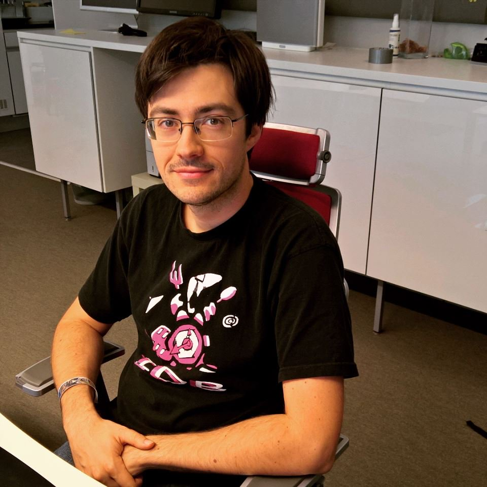
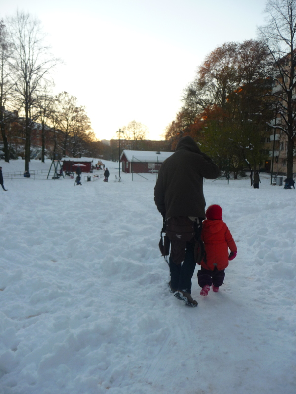

Interview Företagsplatsen #6: Damien Cassou
Interview with Damien Cassou
This is the sixth post of my series of interviews of my colleagues at FTGP.
This is my second interview of Damien, the first one was done when we were both working at Inria, in the RMoD team. Back then we shared our office together with Benjamin, another former member of RMoD now working with us!
With Damien we often hack Emacs packages, pair program and discuss nerd things like self-hosting or Free Software.

Figure 1: Damien at work
Hi Damien, thanks for taking this interview. Can you describe yourself and your background?
My name is Damien Cassou and I arrived in the company early September. Before that, I have been studying in Talence (close to Bordeaux), France, from preschool to Phd. My master and PhD thesis are in the software engineering and programming language domains. After that I did 2 postdocs and got a permanent position as associate professor in Lille, France. I spent 4 great years there, meeting very nice people (looking at you RMoD and FIL) and learning a lot.
I decided to quit to move closer to family and accepted working at FTGP. I've been writing code for many years now and I love contributing to FLOSS (free/libre open-source software).
I'm married and have a 3-year old daughter. I spend my non-working time with them, enjoying life playing and walking around. I also like to read.
What does a typical day at work look like?
I typically arrive at work around 8:30 while other developers are sleeping or taking care of children :-). This gives me some time to reflect on what to do during the day, to clean what I have done during the last days, to update todo lists (both in org-mode and jira), to read… Then, I focus on a task or two until 11am, when the standup-sitted meeting starts. After the meeting and lunch with colleagues, I typically spend the rest of the day pair-programming with people. We often do remote pair-programing with screen, keyboard and mouse sharing. I like that part a lot.
I spend most of my days on Emacs with good Javascript support (js2-refactor, amd-mode, jade, …).
Sometimes I have to go dirty and use a Windows VM with Visual Studio to do C# programming :-D.
What do you do on your free time? (both in front of and away from your computer)?
Outside of work, I try to limit the time spent on my computer to enjoy family. I spend time with Sarah, our 3.5-year old daughter. We often read books (the same ones again and again :-)) and play. When Sarah is sleeping at night, Jenny, my wife, and I watch movies and TV series, read books or talk. I'm currently reading a book on Nonviolent Communication and often read fantasy books. During the week-ends, we visit Stockholm as we just moved there and it's a beautiful city.
Figure 2: Damien with his daughter in Stockholm

Figure 3: Damien in the Swedish winter
When on my computer, most of my free time is on contributing to FLOSS (Free Libre Open-Source Software). These days I mostly contribute to NixOS, a wonderful GNU/Linux distribution that you should have a look at, and Emacs, the main application I run on NixOS.
Ok, now you have to tell us why you like NixOS so much ;-)
How much space do you give me to answer this question? :-).
Nix is a package manager as is Apt. It is however fundamentally different. Apt
and the others have grown out from scripts downloading files and writing them
in filesystems, potentially replacing existing files. Nix does not modify
what's already in a filesystem, it just adds to it. In practice, this means Nix
never writes to nor read from /usr/ or /lib/: each package is installed in
a separate /nix/store/ directory that only depends on packages in
/nix/store/. From this very simple choice, a lot of nice properties appear:
atomic updates, rollbacks, multiple versions of same package, complete
dependency specifications, non-privileged installations, transparent
source/binary deployment and reproducibility. Nix can be installed on Linux,
Mac OS X and other systems.
NixOS is a GNU/Linux distribution built on top of Nix. Beyond having all the
good features brought by Nix for the whole system, NixOS applies the same
principles to the system configuration. Everything in NixOS is configured
through a dedicated text file (named configuration.nix and written in the Nix
functional language): e.g., the boot (filesystems, boot parameters, encryption,
kernel modules, …), the network (hostname, network manager, …), the
services (X11 configuration, desktop manager, keyboard layout, nginx, …) and
the users (home directory, name, password, groups, …). From this file, NixOS
builds a fresh system that doesn't depend on its previous state. This has many
advantages including reproducibility, rollback from grub, versioning of the
configuration and sharing of a configuration between several computers. The
thing I love most is that my system is textually described and can be rebuilt
from scratch at any time: it is not the result of a sequence of changes.
Both Nix and NixOS have been around for a decade now, evolve a lot (NixOS is in the top 10 most active github projects http://krihelinator.xyz/), and rely on solid research works. I really love both Nix and NixOS but both suffer from a too small community that is having a hard time producing all the packages needed by Linux distributions today.
What was your favorite movie of the year?
I typically don't watch that many recent movies and usually forget them as soon as I see "The End". Except for Star Trek. I really like the Star Treks :-).
If you were doing an interview of one of your colleagues, what question would you ask him?
What would you change in this company to make it a better place?
Mikael had a question for the next interview: Why is Företagsplatsen such an awesome place to work at?
I see many reasons. The first one being that people are nice with each other. We solve problems and conflicts by discussing them together. Also, I like the presence of Louise in the company: we should seek for more women and make sure we keep her :-). I particularly appreciate the general agreement that quality is important enough to dedicate time to it: we write automated tests, we refactor code, we pay attention to source code history, … We even have regular meetings to discuss about what is wrong and how to improve.
Thank you Damien!
comments powered by Disqus